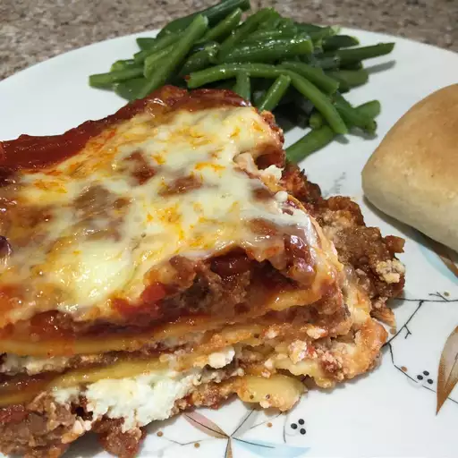

Lasagna

Description
Lasagna is a classic Italian dish made by layering wide, flat pasta sheets with rich fillings like meat ragù, creamy béchamel or ricotta, and melted cheeses such as mozzarella and Parmesan. It's baked until bubbling and golden, then sliced into hearty portions. Originating from the Emilia-Romagna region, lasagna has countless regional and international variations—from veggie-packed versions to indulgent meatball-filled Neapolitan styles.
Ingredients
- 12 lasagna noodles
- 1 lb ground beef
- 1 onion, chopped
- 2 cloves garlic, minced
- 24 oz marinara sauce
- 15 oz ricotta cheese
- 2 cups shredded mozzarella cheese
- 1/2 cup grated Parmesan cheese
- 1 egg
- 2 tbsp olive oil
- Salt and pepper to taste
- Fresh basil or parsley for garnish (optional)
Steps
- Preheat your oven to 375°F (190°C).
- Cook the lasagna noodles according to package instructions. Drain and set aside.
- In a large skillet, heat olive oil over medium heat. Add chopped onion and minced garlic, sautéing until softened.
- Add ground beef to the skillet, cooking until browned. Drain excess fat.
- Stir in marinara sauce, simmering for 10-15 minutes. Season with salt and pepper.
- In a bowl, combine ricotta cheese, egg, half of the mozzarella, and half of the Parmesan. Mix well.
- In a baking dish, spread a thin layer of meat sauce. Layer with noodles, ricotta mixture, more meat sauce, and repeat until all ingredients are used, ending with meat sauce on top.
- Sprinkle remaining mozzarella and Parmesan cheese on top.
- Cover with foil and bake for 25 minutes. Remove foil and bake for an additional 20-25 minutes until cheese is bubbly and golden.
- Let the lasagna rest for 10-15 minutes before slicing. Garnish with fresh basil or parsley if desired. Serve warm and enjoy!